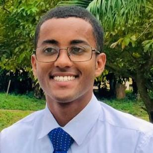

Bruno dos Santos Alves | WDD 130
I am studying software developement, was born in Minas Gerais, Brazil and raise in Rio de Janeiro. I love spending time with my family and to play soccer and volleyball. I have also got a twin brother. I grew up in a city on the hills of Rio de Janeiro, called Petrópolis. It is a very calm city with cool weather, sometimes it gets cold, in the past, we have had tempetures below 0 degrees celsius. I still live here and I intend to stay here for some time, probably until I marry. I served as a full time missionary in Ghana, a west african country. That was an awesome experience, the savior has taught me so much on my mission and he has helped me change. I am very grateful and I really cherish that experience. One day, I want to go back and visit Ghana, and also other african countries and maybe meet some of the people I have been with over there